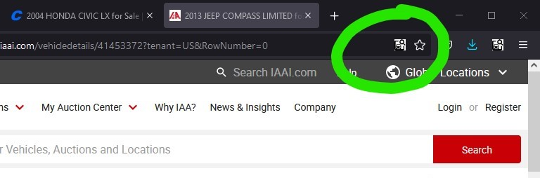

Salvage Search is a browser plugin that makes it easy to search inventory websites for vehicles and download high-def images. Select your browser below to install it.
This plugin has two buttons with two very different functions! The first, the SALVAGE SEARCH button, is always available. It's in your toolbar by default:

To use the search button, copy a VIN (ctrl-C or right-click > copy), then click the Salvage Search button. Search result tabs will open all at once. IAAI's website has decided it no longer searches by VIN, but maybe that will change in the future.
To change which salvage yards are included in the search: On Firefox, right click the icon, select "manage extension," then click the options tab. On Chrome, right click the icon and select "options." A Chrome extension is forthcoming, but is not yet released.
The second button, the DOWNLOAD IMAGES button, only appears on Copart and IAAI listing pages. It appears on the right end of the address bar:
To use the download images button, make sure you're on a Copart or IAAI listing page, where the sale information, and vehicle year/make/model are displayed. The button won't appear on a search page! When the button appears, just click it! The high resolution images for this vehicle will be downloaded. Copart loads very quickly, but IAAI will take a little longer, and a progress bar will be displayed. It's worth the wait, though! You'll get images with no water marks across the middle of them.
I'll freely admit I coded this in a weekend, and sometimes it might not work. If that happens, try refreshing the page and giving it another go. If that doesn't work, send me the lot number and I'll see what I can do.
IAAI also provides panoramic interior photos and exterior walkarounds, but I wanted to get this released soonest, and haven't yet addressed those features. Look for them in a future update.